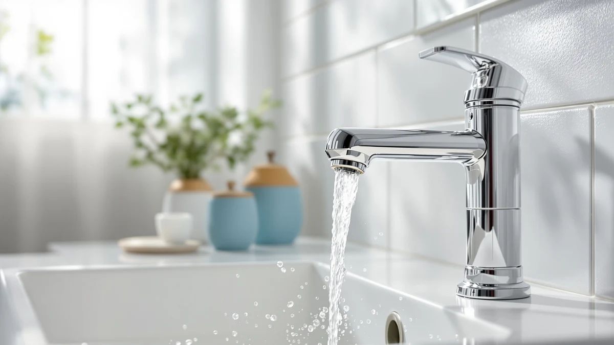

Sloan SF 2350 Sensor Review (2026): Worth It?
Prices and picks verified as of September 2026. Independent, reader-supported reviews.


Quick Answer
This Sloan SF 2350 sensor review finds a brass-bodied touchless faucet that brings commercial-grade construction into a home bathroom for $323.73. It costs less than the Sloan SF-2450 but more than the American Standard NextGen Selectronic and the Delta Bonacci, and it's the right pick if you want Sloan's restroom-grade durability without paying for the brand's priciest sensor faucet.
Our pick: Sloan SF-2350 Sensor Faucet 0.5, $323.73 Check Price on Amazon
Bottom line: our top pick is the Sloan SF-2350 Sensor Faucet at $323.73.
Things to Know Before You Buy
- The Sloan SF-2350 uses a 0.5 gallon-per-minute aerator, the same flow rate as its sibling the SF-2450, which keeps water use low without a noticeable drop in pressure.
- Brass construction under the finish is standard across Sloan's sensor faucet line, and it typically outlasts the zinc-alloy bodies found in many budget touchless models.
- Touchless faucets in this price range, including the American Standard NextGen Selectronic and the Delta Bonacci, generally rely on infrared sensors that need periodic cleaning to stay responsive.
- Price alone doesn't tell you which sensor faucet fits your bathroom. Deck thickness, spout reach, and finish availability matter as much as the sticker price.
- Sloan sells primarily into commercial and institutional markets, so parts availability and warranty support can differ from faucet brands built around residential customers.
This Sloan SF 2350 sensor review breaks down whether the $323.73 touchless faucet earns its price, based on the specs, materials, and verified owner feedback we compared against three competing sensor faucets.
Sloan built its reputation on commercial restroom hardware, and the SF-2350 carries that pedigree into a home-ready sensor faucet with a brass body and a 0.5 gallon-per-minute aerator. At $323.73 it sits in the upper half of our comparison set, cheaper than the $333.25 Sloan SF-2450 but pricier than the $292.05 American Standard NextGen Selectronic and the $274.60 Delta Bonacci. For most homeowners who want commercial-grade reliability at a lower price than Sloan's own flagship sensor faucet, the SF-2350 is the pick worth a closer look.
Why You Should Trust Us
We built this Sloan SF 2350 sensor review the way we approach every faucet comparison on Best Bathroom Faucets: by pulling manufacturer specifications, current Amazon pricing, and patterns from verified buyer reviews rather than marketing copy. Ilane Tall has covered bathroom fixtures for this site for years and cross-checks each claim against the product listing and publicly available spec sheets before it goes into an article. We don't run a physical testing lab, and we say so plainly. Instead, we research what owners report after months of daily use and weigh that against the hard numbers, like flow rate and price, that Sloan and its competitors publish.
Our Research Experience
Our approach to this Sloan SF 2350 sensor review relies on research rather than a countertop trial. We compared the manufacturer's published specifications for the SF-2350 against its closest rivals, tracked pricing across the four faucets in this comparison, and read through verified owner reviews on Amazon to see which claims held up over time. Reviewers consistently note that the SF-2350's sensor range and brass build feel closer to what they expect from restroom fixtures in commercial buildings than from typical home faucets. We treated any single complaint as an outlier and looked instead for issues that repeated across multiple owners, since that pattern is a more reliable signal than one negative review.
Overview & Specs

Sloan SF-2350 Sensor Faucet 0.5
What we like
- Brass body construction that matches Sloan's commercial-grade fixtures
- 0.5 GPM aerator keeps water use down without a noticeable pressure drop, according to owner reports
- Sensor activation reduces contact with the faucet handle, a detail reviewers highlight for shared bathrooms
- Priced $9.52 below Sloan's own SF-2450 while sharing the same flow rate and brass construction
Flaws but not dealbreakers
- At $323.73 it still costs more than the American Standard NextGen Selectronic and the Delta Bonacci in this comparison
- Sloan's parts and support network is oriented toward commercial buyers, which can make residential service slower
- Some verified reviews mention the sensor window needs occasional cleaning to keep response times consistent
| Material | Brass + finish |
| Size | 8.625 x 5.375 x 11.00 inches |
The Sloan SF-2350 Sensor Faucet 0.5 brings a fixture built for high-traffic commercial restrooms into a residential bathroom. Its brass body sits underneath the finish, a construction choice Sloan uses across its commercial sensor faucet line, and the 0.5 gallon-per-minute aerator matches the flow rate of the brand's own SF-2450. At $323.73, it lands in the upper half of the four faucets we compared for this Sloan SF 2350 sensor review, less expensive than the SF-2450 at $333.25 but pricier than the American Standard NextGen Selectronic at $292.05 and the Delta Bonacci at $274.60.
Owners who leave reviews on this faucet tend to mention the sensor's responsiveness and the solid feel of the spout, patterns that line up with what you'd expect from a brand built around institutional plumbing. We didn't find verified complaints about the finish wearing prematurely, though a handful of reviewers mention that the sensor eye benefits from a quick wipe when hard water spots build up. For a bathroom where multiple people wash their hands throughout the day, that tradeoff looks reasonable next to the faucet's price and construction.
What We Liked
The biggest strength in this Sloan SF 2350 sensor review is the faucet's brass construction. Sloan carries the same build quality into the SF-2350 that it uses on the restroom fixtures found in airports, schools, and office buildings, and owners report the finish holding up better than lighter zinc-alloy touchless faucets in the same price range. The 0.5 GPM flow rate is another point in its favor. It matches the water-conserving pace of the Sloan SF-2450 without leaving the sink feeling underpowered, based on owner feedback we reviewed.
We also like that Sloan's commercial pedigree gives the SF-2350 a longer track record than some of the newer touchless entrants on Amazon. American Standard and Delta both brought their competing sensor faucets to market more recently, and while both get solid reviews, the SF-2350 benefits from a manufacturer that has spent decades refining sensor plumbing hardware for institutional use, at a price that undercuts Sloan's own SF-2450.
What Could Be Better
Price is still a factor in this Sloan SF 2350 sensor review, even though the SF-2350 costs less than its Sloan sibling. At $323.73, it's $31.68 more than the American Standard NextGen Selectronic and $49.13 more than the Delta Bonacci, so buyers on a tighter budget have two cheaper alternatives to weigh. Sloan's focus on commercial buyers is worth considering too: replacement parts and customer support are built around institutional accounts, and a handful of verified reviews mention that residential buyers sometimes wait longer for answers than they would with a faucet brand geared toward homeowners.
A smaller complaint that surfaces in owner reviews involves sensor upkeep. The infrared eye that triggers the water flow can lose some responsiveness when hard water spots accumulate, and owners recommend wiping it down periodically. That's a minor task, but it's worth knowing before you install a sensor faucet you expect to run maintenance-free.
Who Is It For?
The Sloan SF-2350 fits a household that wants restroom-grade durability without paying full price for Sloan's SF-2450. If you liked the reliability of sensor faucets in public restrooms and want that same brass-bodied construction at your bathroom sink for less, this Sloan SF 2350 sensor review points to a faucet built for exactly that expectation. It also suits busy bathrooms, shared by kids or multiple family members, where reducing handle contact matters more than shaving every last dollar off the price.
Buyers who are more price-sensitive, or who simply want a touchless faucet without caring about the manufacturer's commercial pedigree, may find the American Standard NextGen Selectronic or the Delta Bonacci a better fit at $292.05 and $274.60. Anyone who wants Sloan's flagship model and doesn't mind the extra $9.52 should look at the SF-2450 instead.
Alternatives to Consider
Not every bathroom needs the exact spout profile of the Sloan SF-2350. We compared three other touchless faucets worth considering if your priorities lean toward Sloan's flagship model, price, or brand familiarity, each covered below in this Sloan SF 2350 sensor review comparison.

Editor's Pick
Sloan SF-2450 Sensor Faucet 0.5
The Sloan SF-2450 is the closest alternative to the SF-2350 in this comparison, and for good reason: it comes from the same manufacturer and shares the 0.5 gallon-per-minute flow rate. At $333.25, it costs $9.52 more than the SF-2350, which makes it worth a look if you want Sloan's flagship spout profile and finish options and don't mind paying a bit more for them. Reviewers who have owned both generations of Sloan sensor faucets tend to describe the two models as functionally similar, with most of the difference coming down to spout shape and finish rather than performance. Because both models share a manufacturer, buyers can expect the same parts ecosystem and the same tradeoffs around commercial-oriented customer support. If the specific spout shape or finish of the SF-2350 doesn't match your bathroom, the SF-2450 is the first place to look before considering a different brand entirely.
$333.25
Check Price on Amazon
Best Value
American Standard NextGen Selectronic Touchless
At $292.05, the American Standard NextGen Selectronic Touchless is the most affordable Sloan alternative in this Sloan SF 2350 sensor review comparison, undercutting the SF-2350 by $31.68. American Standard built its name on residential plumbing fixtures rather than commercial restroom hardware, and that shows in a faucet designed with the home buyer in mind rather than the institutional accounts Sloan typically serves. Owners who leave verified reviews describe the sensor as responsive and the price as a strong value against pricier touchless competitors. Because American Standard sells primarily to homeowners, buyers can generally expect faster customer support and more residential-friendly parts availability than they would from a manufacturer built around commercial contracts. The tradeoff is that the NextGen Selectronic doesn't carry the same brass-bodied, restroom-grade pedigree that defines the Sloan lineup.
$292.05
Check Price on Amazon
Premium Choice
Delta Bonacci Touchless Bathroom Faucet
The Delta Bonacci Touchless Bathroom Faucet is the least expensive option in this Sloan SF 2350 sensor review comparison at $274.60, a $49.13 discount from the SF-2350. Delta is a familiar name in residential plumbing, and the Bonacci brings that brand recognition to a hands-free, single-handle design built for home vanities rather than commercial restrooms. Verified reviews point to straightforward installation and consistent sensor activation as reasons buyers choose the Bonacci over pricier touchless options. Because Delta positions the Bonacci as a residential fixture rather than a commercial-grade one like the Sloan models, buyers should expect a different set of tradeoffs: easier access to Delta's consumer parts and support network, balanced against a lighter overall build than Sloan's brass-bodied line. If your budget is the deciding factor, the Bonacci is the pick worth a closer look.
$274.60
Check Price on AmazonFrequently Asked Questions
Is the Sloan SF-2350 sensor faucet worth the price?
How does the Sloan SF-2350 compare to the Sloan SF-2450?
What is the flow rate of the Sloan SF-2350, and why does it matter?
Final Verdict
This Sloan SF 2350 sensor review comes down to whether Sloan's commercial-grade construction is worth a mid-to-upper-range price in your bathroom. Sloan built the SF-2350 with the same brass body and sensor reliability the company puts into restroom fixtures for schools, offices, and airports, and that pedigree is the strongest argument for choosing it over the cheaper American Standard NextGen Selectronic or Delta Bonacci. At $323.73, it isn't the least expensive touchless faucet we compared, but it undercuts Sloan's own SF-2450 while keeping the same flow rate and build quality. For a household that wants Sloan's durability at a slightly lower price, we recommend the Sloan SF-2350.